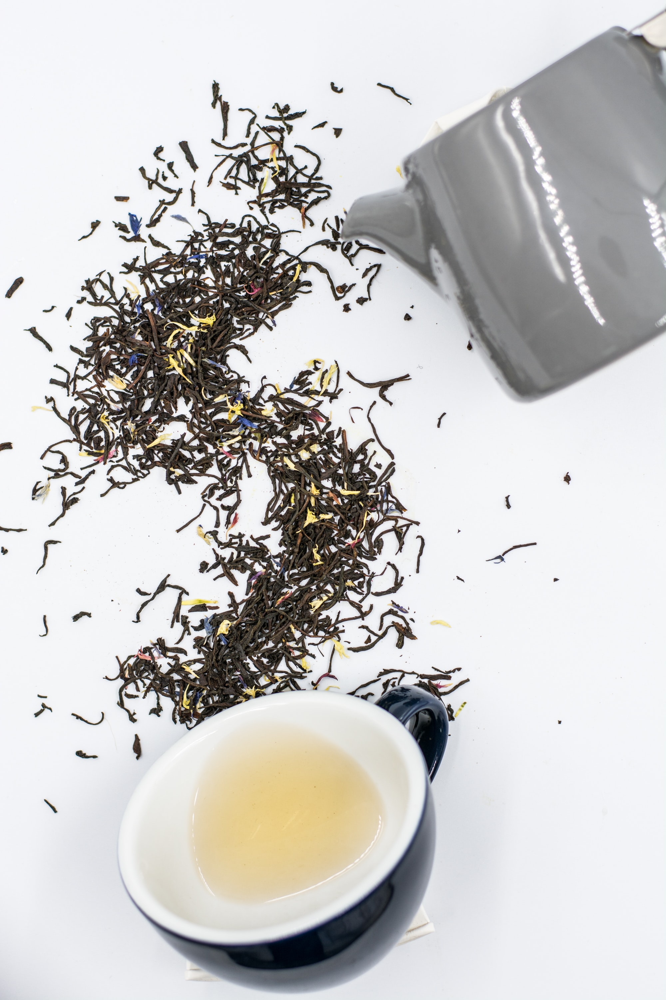

The Wizard is somewhat unfazed by your attack and all you managed to do was spill his tea. It's great to be confident but what part of The Overpowered did you not get?
However, he seems to be in a good mood and rather than blasting you into the sun, he chooses to laugh at your weak attack instead. He ribs you a bit and you both joke about your long nonsensical fued.
The Wizard seems like a cool dude but you've come all this way to defeat him. You could attack him once more and try to defeat Ravendrous Fierin, The Overpowered, once and for all. Or you could try to end things peacefully, afterall your speech skill is much higher than your magic skill. (Wait, why are you a wizard...)
What do you do next?
Attack: Second Times the Charm Compliment His Taste in Music